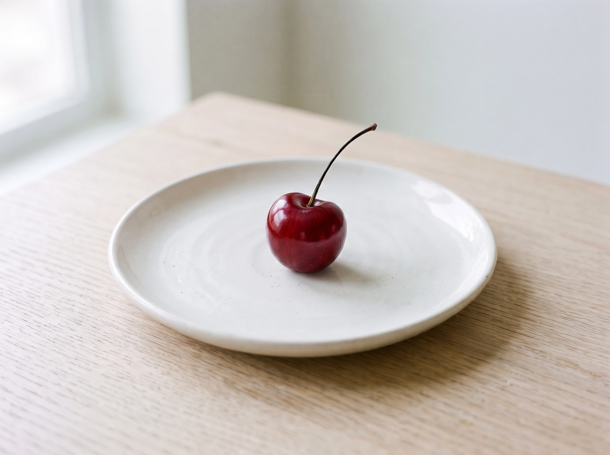
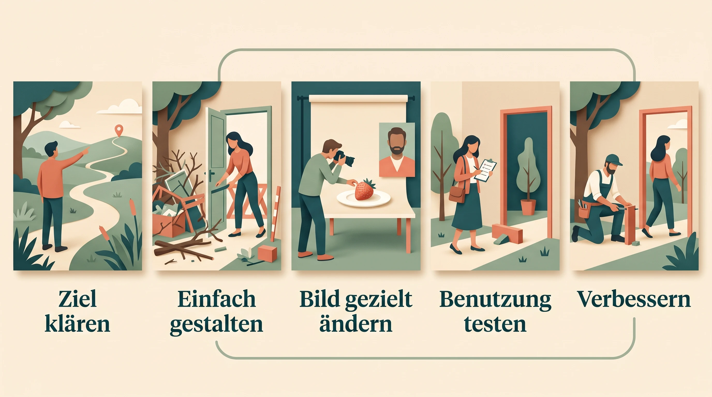

VORHER · Was soll ich hier tun?
WOCHE 05 · UI/UX & BILDGESTALTUNG
Einfach. Und trotzdem alles da.
Gleiche Aufgabe. Gleiche Funktionen. Ein verständlicherer Weg.
NACHHER · Platz reservieren.
Form follows function. Wir gestalten für Menschen – nicht für den Screenshot.
WOCHE 05 · DEIN WORKSHOP
Vier kleine Schritte. Ein besseres Ergebnis.
Arbeite eigenständig. Vergleiche freiwillig. Lass am Ende jemand anderen testen.
DAS ZIEL HEUTE
Die Hauptaufgabe
ist sofort klar.
Mehr Funktionen müssen nicht mehr Unordnung bedeuten.
· nur auf diesem Gerät
WOCHE 05 · OBERFLÄCHE VERSTEHEN
UI ist die Oberfläche. UX der Weg zum Ziel.
UI: Was sehe und bediene ich?
Felder, Farben, Buttons, Rückmeldungen.
UX: Komme ich verständlich ans Ziel?
Finden, ausfüllen, Fehler lösen, fertig.
Simplicity ≠ Funktionen streichen.
Hauptweg zuerst. Extras bei Bedarf.
Wrap-up · Erkenntnis aufklappen
Gute UI zeigt den Hauptweg. Gute UX zeigt sich beim tatsächlichen Erledigen – nicht nur beim Anschauen.
WOCHE 05 · 15 MINUTEN VORLAGENSAFARI
Ideen leihen. Nicht den Ballast.
Zwei Vorlagen ansehen.
Ein gutes Muster mitnehmen.
Eine Sache bewusst weglassen.
Inspiration ansehen, kein bezahlter Lovable-Zugang nötig.
Fremde Texte, Bilder und Marken nicht ungeprüft übernehmen.
Form follows function – und die Gegenperspektive?
Erst Aufgabe, dann Form: unser Leitgedanke. „Function follows form“ kann Ideen anregen: Welche neue Nutzung ermöglicht eine Form? Eine schöne Vorlage darf aber nicht die Aufgabe verdrängen.
Wrap-up · Erkenntnis aufklappen
Wiedererkennbare Regeln sparen Entscheidungen. Nicht die ganze Vorlage übernehmen, sondern das passende Muster.
WOCHE 05 · BILDER GEZIELT ERZEUGEN
Ein Objekt. Eine Person. Ein klares Briefing.
Motiv + Ausschnitt + Licht + Stil.
Und: Was soll nicht hinein?
Eine Erdbeere auf einem Teller.
Ein Hauptmotiv. Ruhiges Licht. Genug Platz, um später einzelne Dinge zu verändern.
Ausgangsbild herunterladen
Fiktive erwachsene Person, keine reale Identität.
Keine privaten Fotos hochladen, wenn Rechte und Einwilligung fehlen.
Nicht alles zugleich ändern.
Erst ein gut prüfbares Original schaffen.
Wrap-up · Erkenntnis aufklappen
Ein präzises Bildbriefing beschreibt sichtbare Merkmale. Ein gutes Ausgangsbild macht spätere Änderungen vergleichbar.
WOCHE 05 · BILDER BEARBEITEN
Ein Original. Viele Möglichkeiten.

DEINE GEGENPROBE
Was ist anders?
Was sollte bleiben?
Teller, Tisch, Ausschnitt und Licht vergleichen.
Jede Variante beginnt bei O0/P0. Bei neuen Szenen dürfen Pose und Licht bewusst wechseln – nicht der Charakter.
Charaktercheck
Augenpartie, Nase, Lächeln, Haaransatz und Frisur mit P0 vergleichen. Neue Pose oder Umgebung ja; ein anderes Gesicht nein. Bei starker Verwandlung Konsistenz kritisch prüfen.

Wrap-up · Erkenntnis aufklappen
„Beibehalten“ ist eine Vorgabe, keine Garantie. Gewünschte Änderung und ungewollte Abweichung getrennt beurteilen.
WOCHE 05 · UI-DASHBOARD · VERGLEICHEN & AUSPROBIEREN
Ein Smartphone. Drei klare Ansichten.
09:41● ▰
Campus Café DEMO
Woche A · Mo–So
Deine Woche.
Umsatz
3.600 €
+20 % zur Vorwoche · 3.000 €
450Bestellungen
8,00 ۯ Bon
Umsatz pro Tag € · 0–800
Woche A: 3.600 € aus 450 Bestellungen. Fiktiver Bericht, kein Versand.
Zwei gleich lange Wochen
Was hat sich verändert?
+600 €
3.600 € statt 3.000 € · +20 %
Woche AVorwoche
Umsatz pro Tag € · 0–800
Gleiche Achse. Gleicher Zeitraum.
Kein abgeschnittener Nullpunkt.
Woche A · Wochenziel
Was ist als Nächstes dran?
90 %
3.600 € von 4.000 € erreicht
Noch 400 € bis zum Ziel.
450Bestellungen
8,00 ۯ Bon
Nur hier sichtbar; kein Speichern oder Versand.
Lokale HTML-Demo · alle Zahlen fiktiv.
DREI GUTE MUSTER · KEINE EINHEITSLÖSUNG
Das Wichtigste zuerst.
Eine Hauptkennzahl.
Zeitraum und Vergleich stehen direkt dabei.
Ein ruhiger Chart.
Zeigt den Verlauf, nicht zehn Dinge zugleich.
Eine klare Hauptaktion.
Details bleiben über beschriftete Zugänge erreichbar.
Vergleiche fair machen.
Gleicher Zeitraum, gleiche Skala.
So bleibt die Veränderung einordbar.
Legende und Werte.
Farbe ist nicht die einzige Information.
Eine Frage pro Ansicht.
Hier: Wie unterscheidet sich diese Woche von der vorigen?
Vom Wert zum nächsten Schritt.
Ziel und Abstand sichtbar.
90 % erreicht; 400 € fehlen bis zum fiktiven Ziel.
Nur eine hervorgehobene Aktion.
Eine Notiz anlegen statt vier konkurrierender Buttons.
Optionen erst bei Bedarf.
Das Eingabefeld erscheint nach dem Klick.
Buttons ausprobieren. Dann: Was würdest du für dein Projekt übernehmen – und was nicht?
WOCHE 05 · DEIN BESTEHENDES PROJEKT WEITERENTWICKELN
Einfacher. Nicht ärmer.
ONEPAGER ODER LERNWERKSTATT AUS W04
Stilkarte + passendes Bild
+ bestehende Funktionen.
- Dateien übergeben. Ausgangsversion sichern.
- Oberfläche vereinfachen. Fachlogik erhalten.
- Anders testen lassen. Nicht erst erklären.
Kein Projekt zur Hand? Fiktiven Onepager öffnen ↗ · HTML herunterladen ↓
7 MINUTEN TEST · ANDERE PERSON
Zeig nicht wie.
Schau zu.
Wo stockte es? Was ändern wir als Nächstes?
Kurzen Feedbackbogen öffnen ↗Anonym, lokal, kein Versand.
Keine verpflichtende Zweierarbeit beim Bauen.
Wrap-up · Erkenntnis aufklappen
Die beste Verbesserung zeigt sich beim Benutzen. Weniger Unordnung – nicht weniger notwendige Funktionen.
WOCHE 05 · DAS BIG PICTURE
Gutes Design macht den nächsten Schritt leicht.

Eine klare Aufgabe. Eine sichtbare Hauptaktion. Ein prüfbares Ergebnis.
Bevor du „fertig“ sagst …
Ausprobieren
Alle Quellen, Grenzen & Bildprovenienz →
Optionale UI-Aufbauidee: Student Patrick Müller.
Repo-Link folgt, sobald verfügbar.